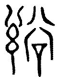
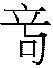
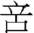

6 訟卦 天水訟
訟，有孚窒惕，中吉終凶。利見大人，不利涉大川。初六，不永所事，小有言，終吉。九二，不克訟，歸而逋，其邑人三百戶，无眚。六三，食舊德，貞厲，終吉，或從王事，无成。九四，不克訟，復即命渝，安貞吉。九五，訟，元吉。上九，或錫之鞶帶，終朝三褫之。
【卦名】
今本：訟 帛書：訟 歸藏：訟 秦簡：訟 上博簡：訟 清華簡：訟 帛書《易之義》：容 海昏：訟
《說文》：「訟，爭也。从言公聲，曰：謌訟。」「，古文訟。」段注：「公言之也。」「訟頌古今字，古作訟，後人假頌皃字爲之。」
依《說文》，訟本意為「爭」，爭取、爭訟、爭辯之義，但也有謌訟的意思，後來則以「歌頌」來假借「謌訟」。《周易》中則應當作爭訟的訟。另有古文寫作，今文解譯為䛦。
訟卦是少數卦名上最沒爭議的一卦，包括各種出土資料及歸藏易，卦名都一致叫「訟」。唯獨帛書逸傳中的《易之義》作「容」，與䛦同樣從谷，應是「訟」的同聲假借。
訟字從公從言，段注並以「公言」來解釋，也就是公斷之言，訴訟的訟。通常人與人之間有爭執，才需要取得公斷，也就是訴訟。
《爾雅》：「訩，訟也。」訟通訩，訩從凶從言，爭訟時往往是口出惡言，因此通訩。《雜卦》說：「訟，不親也。」凡爭訟，人與人惡言相向的同時也造成疏離而不親。
自古「言」之象就相當混亂。傳統以來象數易支持者多以《說卦傳》「兌為口」、「為口舌」而進一步以兌為言。虞翻則是以震為言。依《釋文》，《九家易》在《說卦傳》中以乾為言，明來知德從之。
求諸《周易》全文，有「言」之卦包括需九二「小有言」、訟初六「小有言」、師六五「利執言」、明夷初九「主人有言」、夬九四「聞言不信」、困「有言不信」、革九三「革言三就」、震卦辭及初九「笑言啞啞」，震上六「婚媾有言」，艮六五「言有序」、漸初六「有言」。
以兌為口的原因，可能來自震卦一卦中就有三次出現言，且震為鳴，與言的確有關。以乾為言者，有好幾卦都出現了乾象，若以乾為言，坎為谷，則古訟字「䛦」與卦象是完全一致的。但除了這些取象，還有可能是坎為言。以上諸卦爻，多數都可直接或間接找到坎象（含上下體及互體），因此也可能是以坎為言。
精確來說，兌之象為口為「說」，「說」與「言」並不一樣，說是說服、和顏悅色的說。《說卦》「兌為巫、為口舌」也顯示出兌之為「說」是一種像是巫者一樣天花亂墜、舌燦蓮花的「說」。相較之下，「言」則是口出惡言的言，因坎本為血為加憂，言語上的流血加憂即言。又坎為耳，聽得到的加憂即是言。
訟卦從言從公，言字即由坎之卦象而來，並以乾君為「公」斷之大人，因此「訟」卦也是卦名取自卦象之例。類似的例子如蹇卦，上博簡作「訐」，通「謇」，「言」字旁亦取自坎象。原卦名蹇，亦是言語難行之義，完全與卦象相符。
訟亦有公正之義。上乾為公，下坎為正，因此有公正之象。坎為律、為法為正。《爾雅釋言》：「坎，律，銓也。」《彖傳》蒙卦說「蒙以養正」，艮上為養，下坎為正。師卦「能以眾正，可以王矣」，上坤為眾，下坎為正。
要注意的是，訟之官司，是屬於財產上的爭議，而不是罪刑之判定。《序卦》說：「飲食必有訟，故受之以訟。」鄭玄：「訟，猶爭也，言飲食之會恒多爭也。」「辯財曰訟。」「辯財」即爭財的意思。《周禮》鄭注：「爭罪曰獄，爭財曰訟。」「以兩造禁民訟」鄭注：「訟，謂以財貨相告者。」意思為雙方有財產方面的疑義時，應當請兩方同上公堂，此即「兩造」，以防止人民之間的訴訟。因此「訟」類似於現今的民事訴訟，專門決斷人民之間的財產爭議，得訟卦並不會有牢獄之災，但要注意的是利益上的衝突與糾紛，以及因此而造成的人際關係不和。
《周易》談刑事（獄），決斷人之有罪無罪者是在噬嗑卦：「噬嗑，亨，利用獄。」再如初九說「屨校滅趾」及上九「何校滅耳」。若擴大至《大象》，談到「獄」的除了噬嗑還有豐、旅、賁、中孚。
《易之義》說「容（訟）者得之疑也」，得訟卦要注意，所得到的會是有疑義、有爭議的。
【卦義】
訴訟、爭辯、爭吵。先吉後凶。凡事退讓為上策，退一步海闊天空。
《序卦》：「需者飲食之道也。飲食必有訟，故受之以訟。」卦序上訟與需卦是上下相反的一對卦，是繼屯、蒙兩卦而來。屯蒙為文明初始的啟蒙階段，到需卦為養民的飲食之道，演變至訟卦則是因資源分配不均而有了糾紛與爭執。
訟卦內水險而外剛健，象徵一個人的內心凶險而又剛強求勝；對於自己的危險想法堅持到底，一意孤行。因此而與人興訟、爭吵。
《象傳》：「天與水違行，訟。」乾天陽氣上行，下卦坎水下注，為天水違行之象。不過荀爽這麼注：「天自西轉，水自東流，上下違行，成訟之象也。」荀爽的注解也多為後世易學家所接受，「訟」之卦象來自於天與水的行走方向不一致。乾天由東向西轉，坎水從西向東流。
《彖傳》：「終凶，訟不可成也。」孔子：「必也使無訟乎！」訴訟走到底，那麼就是凶。反之，放下堅持、退一步海闊天空，是得訟卦的最佳對策。王弼注曰：「不閉其源使訟不至，雖每不枉而訟至終竟，此亦凶矣。」訟卦吉道在於防患於未然，讓爭訟自始就不起；一旦訴訟發起，就算勝訴，還是凶。這有如戰爭，只要戰事起，就算戰勝，一樣不是美事。
訟卦是禍中有福，福中有禍，福禍相倚的一卦。往往先吉者後來變為凶，反之則先凶則後吉。這是因為訴訟若是開始有利，反而因此與人結怨，更增強其危險的想法，並積下惡因，所以勝利的喜悅不會太久。反之，若開始就失利，反而因此讓人早日看開而放棄心中堅持，不再與人做無謂的爭吵，因而最後得吉。
訟卦典故可能出自文王斷虞芮之訟，《史記．周本紀》：「詩人道西伯，蓋受命之年稱王而斷虞芮之訟。」又曰：
西伯陰行善，諸侯皆來決平。於是虞芮之人有獄不能決，乃如周。入界，耕者皆讓畔，民俗皆讓長。虞芮之人未見西伯，皆慚，相謂曰：「吾所爭，周人所恥，何往為，祇取辱耳。」遂還，俱讓而去。諸侯聞之，曰「西伯蓋受命之君」。
虞芮兩國因邊境爭田之事而找上文王來做公斷，一進入周地，見到周人相互禮讓，無有相爭，一片和諧，於是感到慚愧而回，將彼此所爭的田地讓出做為閑田，也就是兩國相隔的邊界之田。
此事《說苑．君道》亦有記載：
虞人與芮人質其成於文王，入文王之境，則見其人民之讓為士大夫，入其國則見其士大夫讓為公卿，二國者相謂曰：「其人民讓為士大夫，其士大夫讓為公卿，然則此其君亦讓以天下而不居矣。」二國者，未見文王之身，而讓其所爭以為閑田而反。孔子曰：「大哉文王之道乎！其不可加矣！不動而變，無為而成，敬慎恭己而虞芮自平。」故書曰：「惟文王之敬忌。」此之謂也。
六爻大致以能夠無訟為吉。陽爻都是與訟者，陰爻則是不與訟者，此初六與六三之「終吉」。四個陽爻雖然都是與訟者，九二是興訟的主爻，因處下卦坎中，但居下卦而得中，九四則在九五之下，兩個陽爻都是「不克訟」而得無眚或吉者。九五位居尊位，為能夠裁決爭訟的主爻。陽剛中正，只有公正而不偏袒，大善而得吉。所謂大善之吉，是要能夠做到「自始無訟」。上九是唯一打贏官司者，因此得鞶帶之賜，但也很快遭受「終朝三褫」之禍。
訟，有孚窒惕中吉，終凶。利見大人，不利涉大川。
- 彖曰：訟，上剛下險，險而健，訟。訟有孚窒惕中吉，剛來而得中也。終凶，訟不可成也。利見大人，尚中正也。不利涉大川，入于淵也。
- 象曰：天與水違行，訟。君子以作事謀始。
- 《序卦》：飲食必有訟，故受之以訟。
- 《雜卦》：訟，不親也。
- 帛書《易之義》：嬬者得之畏也，容者得之疑也。
【今解】
訴訟，有誠信，鬱悶而恐懼，中庸則吉，讓訴訟走到底則凶。利於拜見大人，不利於涉險過大川。
訟卦坎水在內為憂心之象，故曰窒惕。乾陽往居在外，坎險在內，故不利涉大川，不宜冒險行事。
【字義】
- 有孚窒惕中吉：有多種不同的讀法。《釋文》：「窒，張栗反，徐得悉反，又得失反，馬作咥。惕，王注或在惕字上，或在下，皆通，在中吉下者非。中如字，馬丁仲反。有孚窒為一句，惕中吉為一句。」鄭玄注：「有孚咥，咥，覺悔貌。」依《釋文》及鄭玄注，當讀作「有孚窒，惕中吉」。宋明儒皆從之。依王弼，此段讀為「有孚窒惕，中吉」：「无善聽者，雖有其實，何由得明。而令有信塞懼者，得其中吉，必有善聽之主焉。」毓鋆批讀《來註》讀做「有孚、窒、惕、中、吉」，以有孚、窒、惕、中四項德行為「吉」之條件。
- 有孚：孚為誠信，信實。
- 窒惕：戒慎恐懼的樣子。窒，塞，堵塞，形容內心苦思而鬱悶的樣子。惕，《說文》：「敬也。」「敬」即今之「警」，警惕、警戒之義。但歷代皆注解為「懼」，恐懼的懼。例如虞翻：「窒，塞止也。惕，懼二也。」孔疏：「窒，塞也。惕，懼也。」窒惕，內心塞止憂鬱而恐懼，形容戒慎恐懼的樣子。「窒」鄭康成作「咥」，曰：「有孚咥，咥，覺悔貌。」依鄭注，此段爻辭應讀為「有孚咥，惕中吉」。意思為，誠心反省悔悟，心懷警惕，那麼為吉。馬融：「咥讀為躓，猶止也。」
- 中吉，終凶：中吉言興訟不宜，具備誠信，知道深思與戒慎恐懼，能秉持中庸之道，才得為吉。終凶，終指終究興訟，堅持讓官司走到底，如此則凶。「中吉，終凶」或可解釋為時間、過程上的「中」與「終」，也就是所問之事發展到中間時為吉，但到最後（終）將轉為為凶。《象傳》：「中吉，剛來而得中也。終凶，訟不可成也。利見大人，尚中正也。」此以德行來解釋中與終，「剛來而得中」意指九二，「利見大人，尚中正也」大人意指九五。
- 不利涉大川：坎為水，為大川，喻危險。不利涉大川喻不宜行險。此呼應前面說的「中吉」，「終凶」。程頤：「訟非和平之事，當擇安地而處，不可陷於危險，故不利涉大川也。」
- 君子以作事謀始：從一開始就避免訴訟之發生，防訟應該從最源頭開始。王弼：「无訟在於謀始，謀始在於作制。契之不明，訟之所以生也。物有其分，職不相濫，爭何由興？訟之所以起，契之過也。故有德司契而不責於人。」王弼認為契約之不明才是訴訟發生的主因，因此應該在一開始就把制度、契約等形式的事做好，有德之君會從司契上下手，而不是責怪於人。
【筮例】
《穆天子傳》：「天子筮獵苹澤。其卦遇訟 。逢公占之，曰：訟之繇，藪澤蒼蒼，其中□宜其正公，戎事則從，祭祀則憙，畋獵則獲。□飲逢公酒，賜之駿馬十六，絺紵三十篋。逢公再拜稽首。」郭璞注：「水性平而天無私，兵不曲撓則戎事集也。」
初六，不永所事，小有言，終吉。
- 象曰：不永所事，訟不可長也。雖小有言，其辯明也。
【今解】
不讓事情長久持續，雖然有些輕微的言語中傷，最終為吉。
初六為訟卦的開始，也是爭訟的最早階段。能夠在一開始就知道爭訟並不是什麼好事，所以不會因為堅持而讓爭訟持久下去。因為不堅持，所以最後為吉。
【字義】
- 不永所事：不讓爭訟持續。永為長久。事，指爭訟之事。《象傳》：「不永所事，訟不可長也。」不讓訴訟之事維持下去，因為訴訟不可以長久。
- 小有言：會有輕微的言語中傷。需九二亦曰「小有言，終吉」。程頤注曰：「小有言語之傷，而无大害。」言在《周易》中多屬負面的意思，指言語上的中傷。《説文》：「直言曰言，論難曰語，从口䇂聲，凡言之屬皆从言。」許慎以「直言」與「論難」對舉來分辨「言」、「語」，以理論、議論方式責難人就是「語」，若是直接說出來，就是「言」，因此「言」為直言之「難」。高亨認為言是（）之誤，因兩字古文形近，《說文》：「，語相訶歫也，从口歫䇂。䇂，惡聲也，讀若櫱。」「䇂，辠也，从干二。二，古文上字。」䇂為罪，形構為干上，即犯上之意。 從口從䇂，因此為言語冒犯之義。《象傳》：「雖小有言，其辯明也。」雖然小有言語上的中傷，但是事能能夠辯明就好，不需走上訴訟之路。坎為言，詳說請參考訟卦〈卦名〉的說明。初六居坎之始，因此為小有言。
九二，不克訟，歸而逋其邑，人三百戶，无眚。
- 象曰：不克訟，歸逋，竄也。自下訟上，患至掇也。
【今解】
訴訟輸了，因此逃回自己的城邑，城邑人口雖然只有三百戶之多，但足以提供保護而免於禍害。
【字義】
- 不克訟：訴訟輸了。克，勝。不克，不勝，失敗。
- 歸而逋其邑人三百戶：讀作「歸而逋，其邑人三百戶」或「歸而逋其邑，人三百戶」，意思相同，意指因爭訟不過而逃回到自己的城邑，其城邑只有三百戶人家。歸，回去。逋，音ㄅㄨ，逃避、逃竄。邑，原本為「國」，或大夫之封地。《說文》：「國也。」段注：「左傳凡偁人曰大國，凡自偁曰敝邑，古國邑通偁。…《周禮》四井爲邑，《左傳》凡邑有宗廟先君之主曰都、無曰邑。」鄭注：「小國之下大夫采地方一成，其定稅三百家，故三百戶也」。《禮記》鄭注：「諸侯之大夫，邑有三百戶之制。」《周禮》：「九夫為井，四井為邑，四邑為丘，四丘為甸，四甸為縣，四縣為都。」根據鄭注，邑是諸侯給大夫的封地。《周禮》則以邑為行政單位，「九夫為井，四井為邑」，依其大小規模，約略可用現代的鄰里，或小村莊視之，朱熹注：「邑人三百戶，邑之小者。言自處卑約，以免災患。占者如是，則无眚矣。」總而言之，邑原意是國，也做為大夫之封地，但到周時又作為一個小小的行政區域。此處之邑，可能指的是大夫之封邑，三百戶則是小型的封邑。因此可推論這次官司的發起者是一個小小的大夫。另依據《周禮》，邑也可以小村莊視之。
- 無眚：眚，音同「節省」的「省」，指人禍。災眚兩字經常連用，災指天災，眚則是人禍。現今則通稱災禍。无眚，沒有災禍。因城邑的保護而能免於禍害。
- 自下訟上，患至掇也：九二陽剛居下而控訴上卦之九五，乃自取其咎。掇，音奪，拾取。患至掇，患難之來乃自取其咎。朱熹：「掇，自取也。 」鄭玄作「惙」：「憂也。」
六三，食舊德，貞厲，終吉。或從王事，无成。
- 象曰：食舊德，從上吉也。
【今解】
靠舊有的祿位供養度日，堅定而艱困，最終為吉。或者能夠為大王做事，但無法有所成就。
六三乘九二與上九相應，九二為興訟者，罪魁禍首。乘九二雖為逆但與上九之君子相應，此為「或從王事」之象，《象傳》曰：「食舊德，從上吉也。」六三爻變下卦成巽，巽為順，為不果，能順而不果於訟，因此轉為吉。
坤卦六三：「含章可貞，或從王事，无成有終。」與訟六三極為類似。
朱熹：「六三陰柔，非能訟者，故守舊居正，則雖危而終吉。然或出而從上之事，則亦必无成功，占者守常而不出，則善也。」楊啓新：「食舊德，安其分之所當得，是不與人競利也。或從王事者，分之所不得越，是不與人競功也。」
【字義】
- 食舊德：德為得。食舊德，食自己舊有或既有的所得（如祿位），因自己先前之所得而得以受到供養。許慎《五經異義》：「食舊德，謂食父故祿也。」孔穎達：｢食其舊日之德祿位。｣程頤：｢祿者稱德而受食，舊德謂處其素分。｣朱熹：｢食，猶食邑之食，言所享也。｣
- 貞厲：貞定而危厲。貞，定，堅定、堅持。厲，危厲，危險，艱困、艱難。
- 或從王事：六三能承載九四，並與上九相應，上與乾（王）相合，為或從王事之象。「或」字代表事情不是必然，而只是一種可能，或者是可能的選擇。
- 无成：無法有成就。畢竟有所爭議，僅得無咎。
九四，不克訟，復即命，渝，安貞，吉。
- 象曰：復即命，渝，安貞，不失也。
【今解】
訴訟失敗，回去即聽從命令，允諾遵守命令，安定守正則吉。
【字義】
- 復即命渝安貞吉：多種讀法，「復即命渝，安貞吉」，「復即命，渝安貞，吉」，「復即命，渝，安貞，吉」。漢及三國時讀作「復即命渝，安貞吉」或「復即，命渝，安貞吉」，意思相通。如虞翻曰：「變而成巽，巽爲命令，故復即命渝。動而得位，故安貞吉。」侯果：「訟既不克，當反就前理。變其詔命，則安靜貞吉而不失初也。」王弼：「若能反從本理，變前之命，安貞不犯，不失其道，為仁猶己，故吉從之。」但自宋明以後多改讀作「復即命，渝安貞，吉」。如程頤：「復即就於命…變而為安貞，則吉矣。命謂正理，失正理為方命，故以即命為復也。方不順也。」來知德：「復即于命者，外而去其忿爭之事也；變而安貞者，內而變其忿爭之心也。」《象傳》：「復即命渝安貞不失也。」配合第一種句讀為「復即命渝，安貞不失也」，若配合第二種句讀則為「復即命，渝安貞，不失也」。宋儒之後對於「命」有種崇拜，將其與「天命」聯想在一起，認為那是「正理」，而渝為改變、毀壞。「命」既然是至高無上之正理，當然是不可改變與毀壞者，因此強將兩字切斷。
- 復即命渝：傳統依此讀法時，大致上解釋為立即改錯，更改命令。復，回家，返回，引申為回歸根本、改過遷善。即，立即。命，命令。渝，改變，毀壞。命渝，改變命令。《說文》：「渝，變汙也。」渝的改變，原本是指變壞、變糟，引申為改變、毀壞的意思，這裡則指推翻原先堅持要訴訟的命令。再從九二「歸而逋其邑人三百戶」爻辭來看，訟卦典故當是來自邑與邑之間的爭訟，此「命」當指一邑官長之命。
- 復即命，渝，安貞，吉：依此讀法，可解釋為：興訟者回家之後即聽從命令，同意訴訟之判決或者上面之命令，因能安定而得吉。渝，假借為俞，帛書本作俞。俞，答應，亦有「安」的意思。《爾雅·釋言》：「然也。」《禮·內則》「男唯女俞」鄭注：「俞，然也。」
- 安貞吉：安於貞為吉。安貞，安定、安於正、安於貞定。此謂推翻訴訟的命令，不再與其他村邑爭訟之後，讓自己的村邑回到安定的狀態，如此為吉。
九五，訟，元吉。
- 象曰：訟元吉，以中正也。
【今解】
訴訟，大善而吉。
九二處下卦坎中，為興訟的成卦主爻。與其對應的九五居天尊之位，具中正之德，為裁決訴訟的治卦主爻。中正象徵的是公正而不偏袒，此為決訟者之大善。「訟，元吉」，意指訴訟要能大善而得吉，並非教人訴訟可得大吉。文王斷虞芮之訟，未及決斷，就已服人，決訟於無訟，此亦符合元吉的占斷。
上九，或錫之鞶帶，終朝三褫之。
- 象曰：以訟受服，亦不足敬也。
【今解】
可能被賜與官帶，但一個早上之內就遭連降三級。
官司最後雖然獲勝，並因此而得到許多好處，然而也因此敗德。這種好處是無法持久的，接下來會失去的恐怕比得到的還要多。上九居訟卦最上，以陽居陰，不當位。雖為最後勝利者，但爭訟非正道，所得不可久，所以才一個早上的時間所得到的鞶帶就三度被剝奪。《象》曰：「以訟受服，亦不足敬也。」以爭訟而受贈的官位，完全無法讓人所敬重。
【字義】
- 或錫之鞶帶：可能被賜與官帶，比喻可能被升官晉級。或，不確定的疑辭。或許…，可能…。錫，同「賜」，賞賜，贈送。鞶帶，大帶，官服上的服飾，比喻官位。
- 終朝三褫之：一個早上之內就被降三次官。比喻先前因與人訴訟所得到的，很快就會加倍奉還。終朝，一個早上之內。馬融：「旦至食時為終朝。」也就是從日出平旦到吃飯的時間。《漢上易傳．日行十二位圖》以寅時為「平旦」，辰時為「食時」，因此「終朝」大略相當於一個上午，此比喻事情變化之快速與突然。褫，剝奪，除去，指奪去先前所贈的官服、官階。三褫之，連續三次的剝奪。有加倍取回之意。
【彖傳注】
訟，上剛下險，險而健，訟。訟有孚窒惕中吉，剛來而得中也。終凶，訟不可成也。利見大人，尚中正也。不利涉大川，入于淵也。
上剛下險，險而健：上下二體卦象解釋訟卦卦義。上乾為剛，下坎為險。訟卦為上剛下險，險而健之象。通常來說，《彖傳》對於卦德的闡釋都屬於正向積極的，但訟卦卦德險而健似乎是負面的，因為這正是興訟的主因。孔穎達：「上剛即乾也，下險即坎也，猶人意懷險惡，性又剛健，所以訟也。」
訟有孚窒惕中吉，剛來而得中也：解釋經文「訟有孚窒惕中吉」，因剛來而得中。剛來而得中指九二，此以訟卦自遯卦而來，遯九三下降至二為剛來。虞翻：「遯三之二也。」蜀才：「此本遯卦。」
終凶，訟不可成也：解釋經文「終凶」，因訴訟不可成。
利見大人，尚中正也：此以九五解釋利見大人。九二「剛來而得中」為訟卦成卦之主爻。九五當位中正，為治卦之主爻，亦為決訟的大人。程頤：「聽者非其人，則或不得其中正也，中正大人，九五是也。」
不利涉大川，入于淵也：坎在內為坎陷之象。坎為大川，大川在內為坎陷，因此不利涉大川。反之，需卦為利涉大川，剛健而不陷。